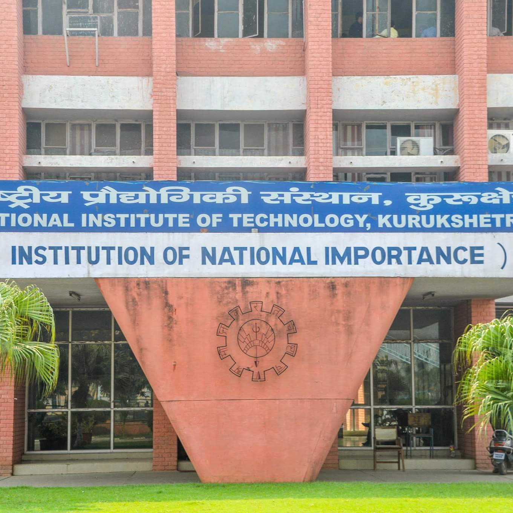

Life at NIT Kurukshetra | NIT KKR

Approx of 170 km far from the administrative capital of India that is New Delhi there exists a small
district of the Indian state Haryana called Kurukshetra. It is a semiurban district but has a highly
importance in Hindu Mythology, and approx 6 kms from the railway station of kurukshetra there comes an
engineering college National Institute of technology, Kurukshetra abbreviated as NITKKR. NITKKR has acquired
7th rank in NIRF rankings amongst all NITs in India and 42nd rank amongst the all acadmics institutions all
over India. So today we will be looking into the journey of four years of a student who has reached here
after clearing the hinderence of the so called one of the toughest competetive exams in India named as JEE
MAINS for entering in the engineering field.
So let's begin!
At the gate of the college we saw written there on the walls 'NATIONAL INSTITUTE OF TECHNOLOGY KURUKSHETRA'
and you feel an amazing stimulation in your body,at the gate the guard stops you for checking. After
entering in the college you can feel a sudden change in the atmosphere and environment. After all the
processes of admission, you are allotted with your hostel which is your second home and the 'adda' of all
the bak*****s' first and now congrats you are an integral part of NITKKR for four years.
At the very first day at hostel you are busy in observing the things all around and understanding the
function and operations of the hostel, the warden will treat you as you are his own son only for
sometime.Now you can boast on your school friends and tell them every single details ki yaar mera hostel
aisa hai,, waisa hai,, yaha aisa hota hai waisa hota h.. And ect.. Etc..
You found the mess food very tasty and nutritional but only for couple of weeks. And now tomorrow is your
first college day so you are very much excited and nervous too.
At the morning of the next day you get ready and rush to your college academic block with the security
guards escorting you as you are the President and have much much confusion after getting the routine and the
code of the subjects.
You see the seniors of 2nd , 3rd, 4th year and thinks that they are the idol and I will follow them in my
college life but after some time you also gets converted like them and know it very well that sab moh maya
hai.
In the college the profie's introduces you to the college and it's different areas and tell you about them
as our college has an area of 300 acres and it's branches are the biggest among all the North Indians
colleges . And you gets very overhelmed and thinks that i am so lucky that I have got admitted in such a big
and prestigious institution. But it's just a halocination.
And now your daily routine is start going to library and collecting the books on the identity card and
thinking that it's a very big library.
And now one of the desire after entering the college is to make girlfriend but girls in the engineering
colleges just like 'unth ke muh me jeera' So your competition begins here and s boys try to talk to girls
and try to impress them some got success but most of of them do not and then they satisfy themselves
accepting them as friends but still have a strong desire to get a girlfriend.
The first semester is invested in understanding the college and making new friends and developing good and
bad habits. In the first semester you are very much sincere and concerned about you studies and study hard
thinking that you will get a good placement and become a good engineer but its just the beginning of life in
engineering college. In the academics you are introduced with a new way of learning and teaching with
advance laboratories and practicals of physics and chemistry.The most annoying but interesting period of
sports and education in which we have to wear white and navy blue dress with shoes and perform yoga and
running. Now coming to the sessional examinations, they have a unique excitement, fear, stress and we can
also say hope and expectations in the first semester, all students study very hard ,learn all the chapters
line by line word by word very sincerely and seriously but as the semester passes and they get to know about
the reality. Then they only study one night before the examination and if we talk about the back benchers
they ask the syllabus a day before examination and study only the most important points which are likely to
come in examination and the rest they leave it on the teacher and of course on the god and this practice
gets perfect after the passage of every semester when we talk about the nightlife of the first especially
the boys hostels it just like mixture of activities going on such as someone is playing pubg aur other
mobile games others are studying, someone is talking to to to his parents and others are talking to their
girlfriends and the majority of students grouped together and have their discussion on different topics such
as the bad management and administration of the college, topics of national intrest, plans of future, thier
college crush, crush on teacher, explaining about the most beautiful girl of the class, someone tells about
his ex girlfriends and there are endless topics on which the discussion goes on.. Till 3 to 4 am. And then
in the morning the daily routine starts.
The most facinating things come when the inductions of clubs and society starts. Being in one club or
society is must to survive in college, after hearing this, students gets influenced by them and rush to the
LHC at 4.30 and try to give their best interviews to get selected in their preferred society and clubs and
they end by entering in multiple clubs deep inside both the interviewer and the students knows that we are
making stupid to each other by promising that we will be always available for the society or club and can to
anyting and everything for them. But this induction is a starting of and wonderful endless journey of
senior- junior relationship that never ends. This is the most important and amazing part of college life
that you get in touch with amazing seniors who guides you as their own sibling and give you the best of best
advices.
Coming to the anther part of the college life which are fests, it is the most awaited events in the college
for many students.
Fests are basically an opportunity for the boys to get in touch with their crushes in different ways and
impress them. These fests are only for three type of students.
1. Who have crush they try to impress them and try to make their partner.
2. Who have neither any plans for the fests nor crushes or girlfriends they find fests simply a three to
four day vacation and they go to their homes and have nothing to do in the fests.
3. The determined toward the club or society students they move or rush to whole college and conduct the
events of the clubs and society and at last they get noting except a membership certificate and some amount
for food and money a and little bit apprecation from the senior for good work .
After the first year when you are in second year you feel like you are now the most knowledgeable man of the
college and you know everything and when you come in contact with new freshies you act like the supreme boss
you order them to say you sir and talk to you with respect and honourly.
You have constructed a very good friend circle and have already done lots of bak*****s and many more are yet
to come in the journey of remaing 3 years. In the mid of second year you start preparing for your future,
some start preparing for ESE/GATE/ IAS .Some students of CS /EC/IT starts thinking and dreaming of doing job
in Google/Microsoft/flipkart/adobe/Amazon and other big IT sector company and few students still figuring
out their future and on the question of what's your plan after college they answer that fistly I want to
enjoy the college life but deep inside they know they have still no plans afer the college.
Talking about a couple life in the college they experience the best life amonst the all students
They have the maximum attendance in the class, they come with matching dresses and their only work in the
class is to stare at each other and pointing to someone with their eyes and then giving a little smile to
each other and then suddenly focusing to the blackboard.and after class moving to have some juice at juice
centre inside the college or outside the campus and after wandering here and there in the college in the
evening they then starts finding the darkest place in the college 'you very well know why' and after this
they hold each other's hand move to drop the girl at the lovers point which we called 'piya milan chowk' and
they hug each other in the manner that this is their last meetings and they will never meet again in their
entire life. Library is a place for reading and learning new things but for couples it's a place to get to
know about each other and grooming their love and spending looking into each others and talking infinitely.
Sharing past life stories.
One sections are of those students who are so called the DR or dedicated towards the engineering they follow
each and every instruction of the teachers completing every single assignment on time doing as per teacher
and Remebering and reading each topic everyday, assisting other students in completing their practicle
files, telling them the important questions of viva and many academic related help.
Do you remember sillencer from 3 idiots..?? Yes these creatures also exist but in a modified way they try to
be the so called chamcha of the professors and always seek to impress the professor and score hood marks and
don't leave any opportunity to get even a single mark stating their own logic to the answer and
explainations.
The college administration declares themselves as a college of zero tolerance against ragging and a ragging
free campus in its brochure but when you spend months in college you will find that there operates different
GTs and they informaly use to ragging students on the name of personality development and making you ready
for public speaking and deep inside it's true that little bit ragging to the students help to sparkle their
personality and making them fearless and preparing them ready for facing all harsh situation of
engineering.
After the successful organization of the college fests each and every society throws after fest parties
these are also for called freshers party as we welcome first year students into the clubs and society to
make them feel special and important for the clubs and societies.
Placements to a good company is a dream of every student in the college and when someone is placed to a
company his happiness level raches to the seventh sky and why not the goal of coming to this college has now
Achieved. Going to placement cell for interview is the most difficult walk for students but when you see
your name on the list of placed students you are on top of the world. Then your friends beat you with the
belts till you feel the satisfaction or the jealousy has vanished of your friend then placed students throws
a good party to their juniors and classmates.
Going into the bitter truth of the college that there happened a huge number of sucides upto 10 to 15 since
last 3 years as the students have taken this bad and wrong step for themselves, all engineering college are
cursed with this. There is some fault in our educaton system this needs to be corrected with some immediate
steps so that such needed lives can be saved.
On the conclusion it can be said that an engineering period is the best period for a student where you enjoy
and experience all the things of a life in a very short period of time. And these four year remains the
unforgettable days of your life.